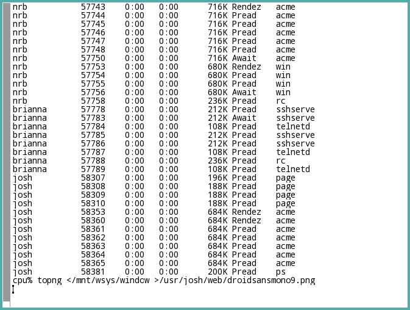

The Android Operating System includes the Droid Fonts by Ascender’s Steve Matteson, available under an Apache 2 License, and here reproduced in the Plan 9 font(6) format. The ttf2subf program was used to convert the fonts from their TrueType® originals.
The file droidfonts.tar.gz in this directory will extract without a
containing directory; the intended use is something like:
% cd /lib/font/bit
% tar xzf droidfonts.tar.gz
This will yield directories droidsans, droidsansbd, droidsansfb,
droidsansm, droidserif, droidserifbd, droidserifbi, droidserifit and
the file droidfonts©.
The fonts display some imperfections on draw(3) devices. The
bottom part of g is trimmed – height and ascent aren’t perfect.